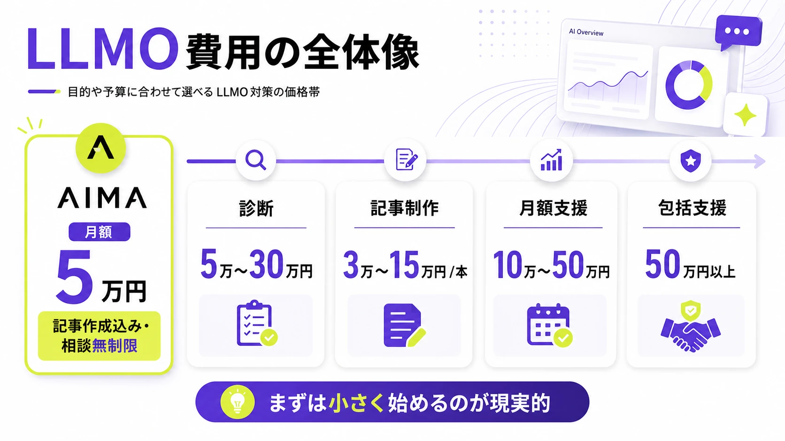
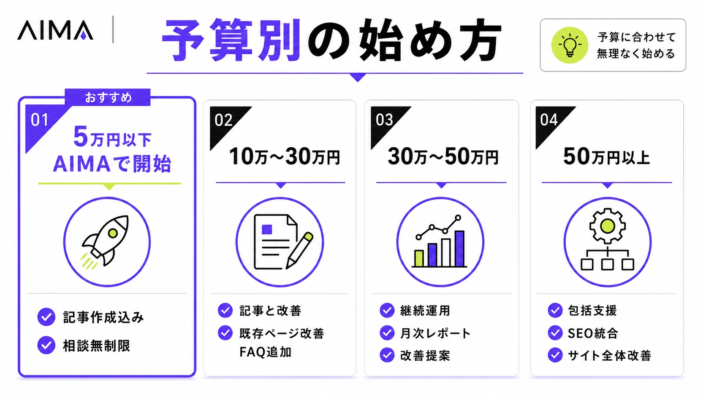
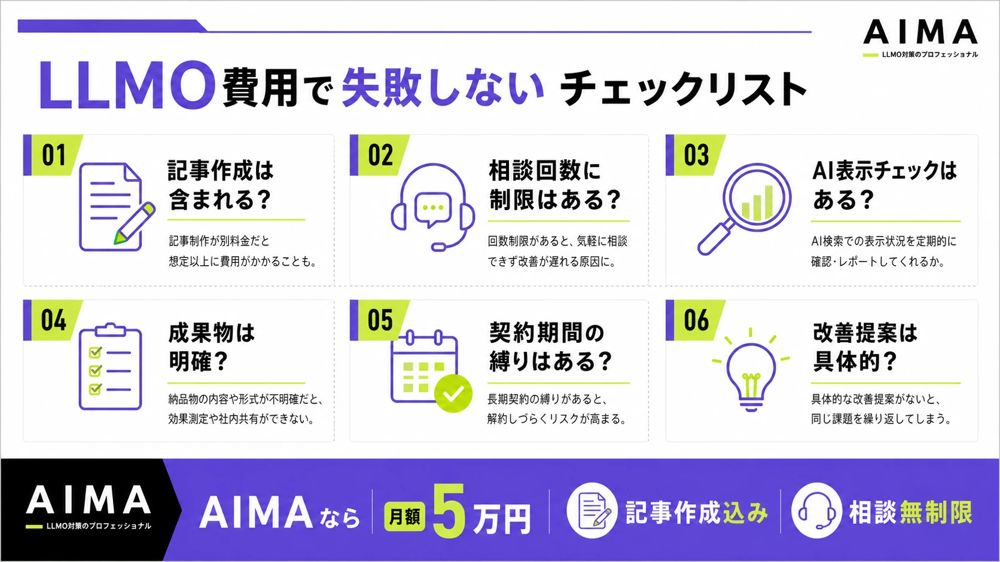

LLMO対策の費用相場はいくら？診断・記事制作・月額コンサルの料金を比較

LLMO対策に興味はあるものの、「外注するといくらかかるのか」「SEO対策より高いのか」「どこまで依頼すべきなのか」と迷っている企業担当者は多いでしょう。
LLMOとは、ChatGPTやGemini、Perplexity、GoogleのAI Overviewsなどの生成AIに、自社の情報やコンテンツが引用・参照されやすくなる状態を目指す施策です。基本から確認したい方は、先にLLMO対策とは何かを解説した記事も参考になります。
本記事では、LLMO対策の費用相場を支援内容別に解説します。料金体系、費用が高くなる理由、見積もり時の確認ポイント、予算別の始め方までわかるため、自社に合う進め方を判断しやすくなります。
LLMOコンサルを検討している場合も、基本的な見方は同じです。診断だけなのか、質問設計、記事制作、既存ページ修正、表示確認まで含むのかで費用は大きく変わります。
先に結論
- LLMO対策は、簡易診断なら5万〜30万円、月額支援なら10万〜50万円前後が目安です。
- 中小企業が小さく始めるなら、まずはAI表示診断、既存記事の改善、FAQ追加から始めるのが現実的です。
- 見積もりでは、料金だけでなく「診断・記事制作・引用チェック・改善提案」がどこまで含まれるかを確認しましょう。
目次

LLMO対策の費用相場は月額10万〜50万円前後がひとつの目安
LLMO対策の費用は、依頼する範囲によって大きく変わります。まずは全体像をつかむために、支援内容ごとの相場感を見ておきましょう。
| 施策内容 | 費用相場 | 主な内容 |
|---|---|---|
| 簡易診断・スポット調査 | 5万〜30万円程度 | AI検索での表示状況チェック、簡易レポート |
| 詳細診断・分析レポート | 20万〜80万円程度 | 競合分析、課題抽出、改善優先度の提示 |
| LLMO記事制作 | 1記事3万〜15万円程度 | AIに引用されやすい記事の新規作成・リライト |
| 月額コンサル・伴走支援 | 月額10万〜50万円程度 | 月次分析、改善提案、コンテンツ方針設計 |
| SEO・LLMO包括支援 | 月額50万〜100万円以上 | 戦略設計、記事制作、サイト改善、レポート |
| 大規模サイト向け支援 | 月額100万円以上 | EC・DB型サイト・多拠点サイトなどの大規模改善 |

中小企業が初めてLLMO対策を始める場合、現実的な予算は月額10万〜30万円前後です。この予算帯であれば、現状診断、競合調査、記事制作、既存ページの改善などを組み合わせやすくなります。
一方で、AI検索での表示状況を広範囲に調査し、複数サービスや複数キーワードを対象に改善する場合は、月額30万〜50万円以上を見ておく必要があります。SEOとLLMOをまとめて改善する包括支援では、月額50万円を超えるケースも珍しくありません。
参考：ミエルカSEO｜LLMO対策の費用はいくら？料金相場・内訳・会社別の比較表
参考：クーミル株式会社｜LLMO対策の費用相場はいくら？料金体系・内訳・企業の選び方まで解説
参考：Media Reach｜LLMO対策の費用はいくら？料金相場・内訳・会社別の比較表
LLMO対策の料金体系
LLMO対策は、ひとつの決まった料金体系があるわけではありません。診断だけを依頼する方法もあれば、記事制作や月額コンサルまでまとめて依頼する方法もあります。
スポット診断型
スポット診断型は、自社がAI検索でどのように表示されているかを調査するプランです。ChatGPT、Gemini、Perplexity、Google AI Overviewsなどで、自社名やサービス名、関連キーワードを入力し、AIの回答内に自社が出てくるかを確認します。
費用は5万〜30万円程度が目安です。簡易的な調査であれば数万円台から依頼できることもありますが、競合比較や改善提案まで含める場合は20万円以上になることもあります。
スポット診断型は、まず現状を知りたい企業に向いています。いきなり月額契約を結ぶのではなく、自社がAI上でどのように認識されているかを確認してから本格的な対策に進めるため、初期投資を抑えやすい方法です。
月額コンサル型
月額コンサル型は、AI検索での表示状況を継続的に確認しながら、改善施策を提案してもらうプランです。月次レポート、定例ミーティング、競合分析、記事テーマ設計、既存ページの改善提案などが含まれます。
費用は月額10万〜50万円程度が目安です。調査対象のAI、質問数、対象サービス数、レポートの深さによって料金が変わります。
社内に記事制作やサイト更新の担当者がいる企業は、月額コンサル型と相性がよいです。外部の専門家に方針を設計してもらい、実際の更新作業は社内で進めることで、費用を抑えながらLLMO対策を継続できます。
コンテンツ制作型
コンテンツ制作型は、LLMOを意識した記事制作や既存記事のリライトを依頼するプランです。AIに引用されやすい記事を増やすことで、検索エンジンと生成AIの両方から見つけられやすい状態を目指します。
費用は1記事あたり3万〜15万円程度が目安です。既存記事の軽いリライトであれば1万〜5万円程度に収まるケースもありますが、専門性の高い記事、比較表、独自調査、FAQ、図解、監修などを含める場合は高くなります。
LLMO向けの記事では、検索順位だけを狙うのではなく、AIが回答に使いやすい情報構造を作ることが重要です。定義、料金、比較、選び方、導入事例、FAQなどをわかりやすく配置することで、AIが情報を理解しやすくなります。
参考：JINRAI｜GEO対策（AIO/LLMO）の費用相場｜施策別コストとROI
包括支援型
包括支援型は、診断、戦略設計、記事制作、既存ページ改善、内部リンク改善、外部評価の強化、レポートまでまとめて依頼するプランです。SEO対策とLLMO対策を同時に進めるケースもあります。
費用は月額50万〜100万円以上が目安です。対象サイトが大きい場合、複数サービスを扱う場合、ECサイトやデータベース型サイトを改善する場合は、さらに高くなることがあります。
包括支援型は、社内にWebマーケティング担当者がいない企業や、短期間で本格的にAI検索対策を進めたい企業に向いています。ただし、費用が高くなりやすいため、契約前に成果物と作業範囲を必ず確認する必要があります。
ツール利用型
ツール利用型は、AI検索での表示状況や競合露出を可視化するサービスを使う方法です。自社名、サービス名、競合名がAIの回答内にどの程度出ているかを確認できます。
費用は月額数万円〜10万円前後が目安です。コンサルや記事制作を含まない分、費用は抑えやすいですが、改善施策の実行は自社で行う必要があります。
ツール利用型は、社内にSEOやコンテンツ制作の知見がある企業に向いています。数値の確認だけで終わらせず、記事改善やページ改善まで自社で進められる体制があるかどうかが重要です。
LLMO対策の費用内訳
LLMO対策の見積もりを正しく判断するには、料金の内訳を理解しておく必要があります。どの作業に費用がかかっているのかを把握できれば、自社に必要な支援と不要な支援を切り分けやすくなります。
AI検索での表示状況調査
最初に行うのは、AI検索で自社がどのように表示されているかの調査です。ChatGPT、Gemini、Perplexity、Google AI Overviewsなどで、自社に関連する質問を入力し、回答内に自社名やサービス名が出るかを確認します。
たとえば、「大阪でおすすめのLLMO会社は？」「中小企業に強いLLMO対策会社は？」「BtoB向けのAI検索対策会社は？」といった質問を投げ、AIがどの会社を選んでいるかを見ます。
質問数が多くなるほど、調査工数は増えます。1〜2個の質問だけを見る簡易診断と、数十〜数百パターンの質問を分析する本格診断では、費用に大きな差が出ます。
競合分析
LLMO対策では、自社だけでなく競合の表示状況も確認します。AIに引用されている競合サイト、比較記事、サービスページ、外部メディアを調べることで、自社に足りない情報が見えてきます。
競合分析では、以下のような項目を確認します。
- AIの回答にどの競合が出ているか
- 競合はどのページを根拠に表示されているか
- 競合サイトにはどの情報があるか
- 比較記事や外部メディアでどのように言及されているか
- 自社に不足している実績・料金・事例・FAQは何か
競合がすでに多くの比較記事や外部メディアに掲載されている場合、自社サイトの改善だけでは追いつきにくいことがあります。その場合は、外部評価やサイテーションの強化も必要になります。
コンテンツ設計
AIに引用されるためには、記事を増やすだけでは不十分です。AIが回答を作るときに使いやすいテーマ、見出し、本文構成、FAQ、比較表を設計する必要があります。
LLMO向けのコンテンツ設計では、以下のような情報を整理します。
- 自社が表示されたい質問
- その質問に対してAIが求める回答要素
- 競合が持っていて自社に不足している情報
- 記事で補うべき情報
- サービスページで補うべき情報
- FAQで補うべき情報
- 事例や実績として出すべき情報
この設計が甘いと、記事を増やしてもAIに引用されにくくなります。LLMO対策では、単なる記事量産ではなく、AIが理解しやすい情報資産を作ることが重要です。
記事制作・リライト
記事制作は、LLMO対策の中心になりやすい施策です。特に、比較記事、選び方記事、費用相場記事、FAQ記事、事例記事は、AIが回答を作るときの材料になりやすいテーマです。
新規記事制作では、検索意図の分析、見出し作成、本文執筆、事実確認、表の作成、FAQ作成などが必要です。専門性の高いテーマでは、担当者へのヒアリングや監修が必要になることもあります。
既存記事のリライトでは、AIに引用されやすい定義文、比較表、FAQ、一次情報、実績情報を追加します。すでにSEOで評価されている記事を活かせるため、新規記事より費用対効果が高くなるケースもあります。
サイト内部の改善
AIが自社を正しく理解するには、記事だけでなくサイト全体の情報も重要です。会社概要、サービスページ、料金ページ、導入事例、FAQ、代表者情報、実績ページなどが不足していると、AIが自社を判断しにくくなります。
特にBtoB企業では、以下の情報を明確にしておくことが大切です。
- 何を提供している会社か
- どの業界に強いか
- どの地域に対応しているか
- どのような実績があるか
- 料金の目安はいくらか
- 競合と何が違うか
- どのような課題を解決できるか
これらの情報がサイト内に十分にない場合、AIは外部の比較記事や競合サイトの情報を優先する可能性があります。
外部評価・サイテーション強化
LLMO対策では、自社サイト以外での言及も重要です。比較記事、業界メディア、ニュース記事、プレスリリース、ポータルサイト、口コミ、SNSなどで会社名やサービス名が言及されると、AIが自社を認識しやすくなります。
特に、AIが「おすすめ企業」や「比較候補」を回答する場面では、外部メディアでの掲載状況が影響することがあります。公式サイトだけを整えても、外部でほとんど言及されていない会社は、AIの回答に出にくい可能性があります。
ただし、外部評価の強化は短期間で成果が出る施策ではありません。継続的な情報発信、実績作り、メディア掲載、被リンク獲得などを組み合わせる必要があります。
モニタリング・レポート
LLMO対策は、施策を実行して終わりではありません。AIの回答は変動するため、定期的に表示状況を確認する必要があります。
モニタリングでは、以下のような項目を見ます。
- 自社名がAI回答内に出ているか
- 競合と比較してどの位置に出ているか
- 自社サイトが引用元として使われているか
- 以前より回答内容が改善しているか
- 誤った情報が表示されていないか
- ChatGPT、Gemini、Perplexityなどで差があるか
月次レポートが含まれるプランでは、このような変化を記録し、次に改善すべき記事やページを提案します。対象AIや質問数が多いほど、レポート費用は高くなります。
LLMO対策の費用が高くなる理由
LLMO対策の料金は、単に「記事を書く費用」だけで決まるわけではありません。調査範囲、競合性、サイトの状態、実装範囲によって大きく変わります。
対象キーワード・質問数が多い
AI検索では、通常のSEOキーワードだけでなく、ユーザーが入力する質問文も重要です。たとえば「LLMO会社」「LLMO 費用」だけでなく、「中小企業におすすめのLLMO会社」「大阪でLLMO対策に強い会社」「BtoB向けのAI検索対策会社」など、質問の切り口が複数あります。
対象とする質問数が多いほど、調査・分析・レポート作成に時間がかかります。特にBtoB商材では、業界、課題、地域、予算、導入目的ごとに質問が分かれるため、調査範囲が広がりやすくなります。
競合性が高い業界である
金融、不動産、人材、医療、美容、SaaS、士業などは、SEOや広告に投資している企業が多い領域です。競合サイトの情報量が多く、外部メディアでの言及も多い場合、簡単な記事追加だけでは差がつきにくくなります。
競合性が高い業界では、記事制作だけでなく、サービスページの改善、導入事例の追加、外部評価の強化、専門家監修などが必要になることがあります。その分、費用も高くなります。
サイト内の情報が不足している
会社情報、料金、実績、事例、FAQ、サービスの強みが不足しているサイトは、AIに引用されにくくなります。AIが自社について判断する材料が少ないため、競合や外部メディアの情報を優先する可能性があるからです。
この場合、記事を追加するだけではなく、サイト全体の情報を整える必要があります。サービスページの改修、FAQの追加、導入事例の作成、会社情報の充実などが必要になるため、費用が上がります。
SEOとLLMOを同時に改善する必要がある
LLMO対策はSEOと完全に切り離せるものではありません。AIはWeb上の情報を参照するため、検索エンジンで評価されているページ、外部から参照されているページ、構造がわかりやすいページは重要な情報源になります。
既存のSEO評価を守りながらLLMO向けに改善するには、見出し構造、内部リンク、検索意図、CV導線、既存順位への影響を考える必要があります。SEOとLLMOを同時に扱える設計力が必要になるため、費用は高くなりやすいです。
技術対応まで含まれる
構造化データ、HTML構造、内部リンク、サイトスピード、ページテンプレート、CMSの改善まで含めると、費用はさらに上がります。エンジニアや制作会社の作業が必要になるためです。
ただし、中小企業が最初から技術対応まで丸ごと依頼する必要はありません。まずはAIに表示されたい質問を決め、記事やサービスページの情報を整えるだけでも、現実的な一歩になります。
LLMO対策は自社対応と外注のどちらがよいか
LLMO対策は、すべてを外注する必要はありません。自社のリソースや予算に応じて、内製する部分と外注する部分を分けるのが現実的です。
自社対応が向いているケース
自社対応が向いているのは、社内にSEOやコンテンツ制作の担当者がいる企業です。AI検索での表示状況を確認し、記事の更新やページ改善を自社で進められる場合、外注費を抑えながらLLMO対策を始められます。
特に、以下に当てはまる企業は内製しやすいです。
- 社内にWeb担当者がいる
- 記事制作やリライトの経験がある
- WordPressやCMSを自社で更新できる
- 競合分析やキーワード調査に慣れている
- 定期的にコンテンツを追加できる体制がある
ただし、最初の設計を誤ると、記事を増やしても成果につながりにくくなります。内製する場合でも、初回の診断や記事設計だけは外部に依頼する方法があります。
外注が向いているケース
外注が向いているのは、何から始めるべきかわからない企業や、社内に記事制作リソースがない企業です。LLMO対策では、AIの表示状況、競合分析、記事設計、サイト改善をまとめて考える必要があるため、初期設計だけでも専門家の力を借りる価値があります。
以下に当てはまる企業は、外注を検討するとよいでしょう。
- AI検索で競合ばかり表示されている
- 自社サイトに記事やFAQが少ない
- SEO記事を作っているが成果が伸びていない
- 社内にWebマーケティング担当者がいない
- 問い合わせにつながる記事を作りたい
- BtoB商材で比較・検討段階の接点を増やしたい
外注する場合は、作業範囲を明確にすることが重要です。診断だけなのか、記事制作まで含むのか、月次改善まで行うのかを確認しましょう。
一部だけ外注する方法もある
LLMO対策は、すべてを外注すると費用が高くなります。そのため、戦略設計や記事設計だけを外注し、入稿や軽微な更新は自社で行う方法もあります。
| 領域 | 外注向き | 内製向き |
|---|---|---|
| 現状診断 | ◎ | △ |
| 競合分析 | ◎ | △ |
| 記事テーマ設計 | ◎ | ○ |
| 記事制作 | ○ | ○ |
| 既存記事の軽微な修正 | △ | ◎ |
| 入稿・画像設定 | △ | ◎ |
| 月次モニタリング | ○ | ○ |
| 技術実装 | ○ | △ |
最初から高額な包括支援を契約するのではなく、診断と記事制作から始める方法もあります。小さく始めて成果を確認し、効果が見えた領域に追加投資する方が無駄を減らせます。
予算別に見るLLMO対策の始め方
LLMO対策は、予算によって取れる施策が変わります。ここでは、月額予算ごとに現実的な始め方を見ていきます。

月額5万円以下の場合
月額5万円以下では、本格的なコンサルティングや継続的な記事制作まで含めるのは難しいケースが多いです。ただし、支援範囲を絞れば、AI検索での現状確認、記事テーマ設計、記事制作まで始められる場合があります。
たとえば株式会社AIMAでは、月額5万円でLLMO対策を支援しています。記事作成も含めて対応し、相談回数は無制限です。「何から始めればいいかわからない」「どの記事を作ればいいかわからない」という段階から相談できます。
- AI検索での表示状況チェック
- 競合の簡易調査
- AIに引用されやすい記事テーマの提案
- LLMO記事の作成
- 既存ページやFAQの改善相談
- チャットや打ち合わせでの相談無制限
高額なコンサル契約を結ぶ前に、まず小さくLLMO対策を始めたい企業は、詳しくはこちらからご相談ください。
自社で始める場合のおすすめ施策は以下です。
- 主要AIでの表示状況チェック
- 競合3社の簡易調査
- 既存記事のLLMOリライト
- FAQの追加
- 料金・実績・会社情報の補強
この予算帯では、施策を広げすぎないことが大切です。まずは自社がAIに表示されたい質問を3〜5個に絞り、その質問に対応する記事やページを整えることから始めましょう。
月額10万〜30万円の場合
月額10万〜30万円は、中小企業がLLMO対策を始めやすい予算帯です。現状診断、競合分析、記事制作、既存ページ改善を組み合わせやすくなります。
おすすめの施策は以下です。
- 月2〜4本の記事制作
- 既存記事のリライト
- AI表示状況の月次チェック
- 比較記事・選び方記事の作成
- サービスページの情報補強
- FAQページの追加
この予算帯では、問い合わせにつながりやすいテーマに絞ることが重要です。アクセス数だけを狙うのではなく、「おすすめ会社」「費用相場」「比較」「選び方」「導入事例」など、検討段階の読者に近い記事を優先しましょう。
月額30万〜50万円の場合
月額30万〜50万円では、LLMO対策を継続的に進めやすくなります。複数キーワード群の調査、記事制作、サービスページ改善、月次レポートまで含めた運用が可能です。
おすすめの施策は以下です。
- 複数サービスのAI表示状況調査
- 月4〜8本の記事制作
- 既存記事の大幅リライト
- サービスページ改善
- 導入事例の作成
- 比較表・FAQの拡充
- 月次モニタリングと改善提案
この予算帯では、記事単体ではなくサイト全体の情報設計を見直すことができます。AIに引用されたいテーマに対して、記事、サービスページ、FAQ、事例をつなげることで、AIが自社を理解しやすい状態を作れます。
月額50万円以上の場合
月額50万円以上は、SEOとLLMOを統合して本格的に改善したい企業向けの予算帯です。大規模サイト、複数サービス、複数地域、複数ペルソナを対象にする場合は、この価格帯になりやすくなります。
おすすめの施策は以下です。
- SEO・LLMO統合戦略の設計
- サイト全体の情報構造改善
- 大量記事の制作・改善
- 内部リンク改善
- 導入事例・ホワイトペーパー制作
- 外部メディア掲載施策
- AI検索とSEOの統合レポート
ただし、高額な支援を契約する前に、成果物と実行範囲を確認する必要があります。月額費用が高くても、レポートだけで実作業が少ないプランでは成果につながりにくくなります。
安いLLMO対策会社に依頼しても大丈夫か
LLMO対策は新しい領域のため、料金の安さだけで判断すると失敗しやすくなります。ただし、作業範囲が明確であれば、低価格のプランでも十分に活用できます。
作業範囲が明確なら問題ない
安いLLMO対策会社がすべて悪いわけではありません。診断のみ、記事制作のみ、月次レポートのみなど、作業範囲が明確であれば、低価格でも有効に使えます。
たとえば、以下のような目的であれば、低価格プランでも十分です。
- まずAI検索での表示状況を知りたい
- 既存記事を数本だけリライトしたい
- FAQを追加したい
- 比較記事を1本作りたい
- 自社で進めるための方針だけ知りたい
一方で、「AIに表示されるまで全部任せたい」「サイト全体を改善したい」「複数サービスを同時に対策したい」という場合は、低価格プランだけでは足りない可能性があります。
「AIに必ず表示される」は疑った方がよい
LLMO対策では、「必ずAIに表示される」と言い切る会社には注意が必要です。AIの回答は、質問文、タイミング、参照データ、AIサービスの仕様変更によって変わります。
成果保証をうたう場合は、以下を確認しましょう。
- どのAIを対象にしているか
- どの質問文で成果を判断するか
- 何位以内に表示されれば成果なのか
- 自社名の表示だけで成果なのか
- 引用元として使われることまで見るのか
- いつ時点の結果で判断するのか
成果条件があいまいなまま契約すると、期待していた状態と実際の成果にズレが出やすくなります。
料金だけでなく成果物を確認する
LLMO対策会社を比較するときは、料金だけでなく成果物を確認しましょう。同じ月額20万円でも、会社によって作業内容は大きく異なります。
確認すべき項目は以下です。
- 診断レポートはあるか
- 調査対象のAIはどれか
- 調査する質問数はいくつか
- 競合分析は含まれるか
- 記事制作は何本含まれるか
- 既存記事のリライトはあるか
- サービスページ改善は含まれるか
- 月次レポートはあるか
- 定例ミーティングはあるか
- 契約期間と解約条件はどうなっているか
見積もりを比較するときは、金額だけでなく「何をどこまでやってくれるのか」を見ましょう。
LLMO対策会社に見積もりを依頼する前に準備すること
見積もりの精度を上げるには、依頼前の準備が重要です。目的や対象があいまいなまま相談すると、必要以上に高い提案になったり、成果につながりにくい施策になったりします。
対策したいサービスを決める
最初から会社全体を対策しようとすると、調査範囲が広がりすぎます。まずは売上につながりやすいサービス、問い合わせを増やしたいサービスに絞りましょう。
たとえば、複数のサービスを提供している会社であれば、最初は利益率が高いサービスや受注したいサービスから始めるのが現実的です。対象を絞ることで、記事テーマや改善ページも決めやすくなります。
AIで表示されたい質問を決める
LLMO対策では、「どの質問に対して自社を表示させたいのか」が重要です。質問が決まっていないと、調査対象も記事テーマもぼやけます。
質問例は以下です。
- おすすめの〇〇会社は？
- 〇〇に強い会社は？
- 〇〇の費用相場は？
- 中小企業におすすめの〇〇は？
- 大阪でおすすめの〇〇会社は？
- BtoBに強い〇〇会社は？
- 〇〇を外注するならどこがよい？
実際の顧客がどのようにAIへ質問するかを想定し、売上につながる質問から優先しましょう。
競合企業を決める
AI検索で比較されたい競合、すでに表示されている競合を洗い出します。競合が明確になると、自社に足りない情報や差別化ポイントが見えやすくなります。
競合は、SEO上の競合だけではありません。AIの回答に出てくる会社、比較記事で上位に掲載されている会社、業界内でよく知られている会社も対象になります。
既存サイトの情報を確認する
見積もり前に、自社サイトに必要な情報がそろっているか確認しましょう。特に、料金、実績、導入事例、FAQ、会社情報、代表者情報、サービスの強みが不足している場合は、LLMO対策の前に情報整備が必要です。
自社サイトに情報が少ない状態で外注すると、記事制作だけでは成果が出にくくなります。AIが自社を理解する材料を増やすことが、LLMO対策の土台になります。
LLMO対策の費用対効果を判断する指標
LLMO対策の成果は、通常のSEO順位だけでは判断できません。AI回答内での表示、引用、競合比較、問い合わせへの影響を組み合わせて見る必要があります。
AI回答内での自社名の表示回数
最も基本的な指標は、AI回答内に自社名が表示される回数です。特定の質問に対して、自社が候補として出てくるかを定期的に確認します。
ただし、自社名が1回出たから成功とは限りません。どの質問で、どの文脈で、どの競合と一緒に表示されたのかまで見ることが重要です。
競合と比較した表示位置
AIが複数社を並べて回答する場合、自社が何番目に出るかも重要です。1番目に出る場合と、最後に補足的に出る場合では、ユーザーへの印象が異なります。
競合と比較した表示位置を記録すると、施策前後の変化を見やすくなります。特に「おすすめ会社」「比較」「選び方」系の質問では、表示位置が問い合わせに影響しやすくなります。
引用元として自社サイトが使われる回数
AI回答の根拠として、自社サイトや自社記事が使われるかも重要です。自社名が表示されていても、根拠が外部メディアだけに依存している場合、自社の情報を十分にコントロールできていません。
自社サイトが引用元として使われるようになると、AIに正確な情報を伝えやすくなります。料金、実績、サービス内容、対応領域などを自社サイトに明確に書くことが大切です。
AI経由の流入・問い合わせ
ChatGPT、Perplexity、Geminiなどからの流入が増えているかを確認します。アクセス解析でAI経由の流入を完全に把握するのは難しい場合もありますが、参照元や指名検索の変化を見ることで傾向をつかめます。
また、問い合わせフォームに「何を見て知りましたか？」という項目を追加し、「ChatGPT」「Gemini」「AI検索」などの選択肢を入れておくと、成果を確認しやすくなります。
LLMO記事のSEO流入
LLMO向けに作った記事は、SEO流入も狙えます。費用相場、選び方、比較、FAQなどの記事は、通常検索でもニーズがあるため、AI検索とSEOの両方で成果を見込めます。
AIでの表示だけを追うのではなく、検索順位、クリック数、流入数、問い合わせ数も合わせて確認しましょう。LLMO記事は、AIに引用されるための資産であると同時に、SEO集客の資産にもなります。
LLMO対策の費用で失敗しないための注意点
LLMO対策は新しい領域のため、料金だけで比較すると失敗しやすくなります。費用を無駄にしないためには、契約前に作業範囲と成果物を具体的に確認することが大切です。

相場より安すぎる場合は作業範囲を確認する
相場より安いプランでは、調査だけ、レポートだけ、記事制作だけというケースがあります。どこまで含まれるのかを確認しないと、契約後に追加費用が発生する可能性があります。
特に確認すべきなのは、記事制作の有無、リライトの有無、月次レポートの有無、改善提案の具体性です。安いプランでも、目的に合っていれば問題ありません。逆に、高いプランでも成果物があいまいなら慎重に判断すべきです。
記事制作だけで成果が出るとは限らない
LLMO対策では記事制作が重要ですが、記事を増やすだけで成果が出るとは限りません。会社情報、サービスページ、料金、実績、FAQ、導入事例、外部評価が不足していると、AIが自社を十分に理解できない可能性があります。
記事制作だけで成果が出るとは限りません。記事制作を依頼する場合でも、サイト全体の情報が足りているかを確認しましょう。AIに引用される記事を作るには、記事単体ではなく、サイト全体の情報設計が重要です。
短期の成果保証に頼りすぎない
LLMO対策は、短期間で成果を固定しにくい施策です。AIの回答は変動しやすく、質問文やタイミングによって結果が変わることがあります。
そのため、1週間や1か月だけで成果を判断するのではなく、最低でも3か月程度は表示状況を確認する方が現実的です。短期の成果保証だけに惹かれるのではなく、継続的に改善できる体制があるかを見ましょう。
SEOと切り離して考えない
LLMOはSEOの代わりではありません。AIがWeb上の情報を参照する以上、検索エンジンで評価されているページ、外部から参照されているページ、専門性の高いページは重要です。
SEOで蓄積した記事や被リンク、指名検索、会社情報は、LLMO対策の土台になります。SEOを捨ててLLMOだけを行うのではなく、SEOで得た資産をAI検索にも活かす考え方が大切です。
LLMO対策の費用に関するよくある質問
LLMO対策の費用は支援内容によって差が大きいため、見積もり前に疑問を解消しておくことが大切です。ここでは、依頼前によくある質問に回答します。
LLMO対策は月額いくらから始められますか？
簡易診断や記事制作のみであれば、数万円台から始められるケースがあります。ただし、継続的な改善や月次レポートまで含める場合は、月額10万〜50万円前後を見ておくと現実的です。
まずは小さく始めたい場合、スポット診断と数本の記事制作から始める方法があります。いきなり高額な包括支援を契約するより、AIでの表示状況と競合状況を確認してから投資範囲を決める方が無駄を抑えられます。
LLMO対策は何か月続けるべきですか？
最低でも3か月は見た方がよいです。記事制作やサイト改善を行っても、AIの回答に反映されるまでには時間がかかることがあります。
本格的に取り組む場合は、3〜6か月単位で表示状況を確認しながら改善するのが現実的です。初月で診断と設計を行い、2〜3か月目で記事制作やページ改善を進め、以降は表示状況を見ながら改善を続ける流れが一般的です。
LLMO対策とSEO対策は別料金ですか？
会社によって異なります。SEOとLLMOを別プランにしている会社もあれば、SEO・LLMOをまとめて支援する会社もあります。
見積もりを確認するときは、SEO記事制作、既存記事のリライト、内部リンク改善、AI表示状況のモニタリングが含まれているかを見ましょう。名称だけでは判断せず、実際の作業内容を確認することが大切です。
LLMO記事制作の費用はいくらですか？
LLMO記事制作の費用は、1記事あたり3万〜15万円程度が目安です。既存記事の軽いリライトであれば1万〜5万円程度に収まるケースもあります。
ただし、専門性の高いテーマ、独自調査、比較表、図解、監修、担当者ヒアリングなどが入る場合は費用が上がります。AIに引用されやすい記事を作るには、単に文章を書くのではなく、情報設計と事実確認が重要になります。
中小企業はいくらの予算から始めるべきですか？
中小企業が初めてLLMO対策を行う場合、月額10万〜30万円前後、またはスポット診断＋記事制作から始めるのが現実的です。
いきなり月額50万円以上の包括支援を契約するより、まずは自社がAIでどのように表示されているかを確認し、問い合わせにつながりやすいテーマから記事やページを改善しましょう。小さく始めて、成果が見えた領域に追加投資する方が費用対効果を判断しやすくなります。
まとめ｜LLMO対策の費用は支援範囲で大きく変わる
LLMO対策の費用は、診断だけを依頼するのか、記事制作まで含めるのか、月額コンサルやサイト改善まで依頼するのかによって大きく変わります。相場だけを見て判断するのではなく、自社に必要な支援範囲を明確にすることが重要です。
簡易診断や記事制作から始める場合は、数万円〜数十万円程度で始められるケースがあります。継続的な月額支援を依頼する場合は、月額10万〜50万円前後がひとつの目安です。SEO・LLMOをまとめて改善する包括支援では、月額50万円以上になることもあります。
最初から大きな予算をかける必要はありません。まずは、自社がAIに表示されたい質問、競合として比較される会社、改善したいサービスを明確にしましょう。そのうえで、診断、記事制作、既存ページ改善、月額支援のどこまで必要かを判断すれば、無駄な費用を抑えながらLLMO対策を始められます。
LLMO対策を低予算で始めたい場合は、まずAI検索での現状診断と、AIに引用されやすい記事制作から取り組むのがおすすめです。
LLMO対策を低予算で始めたい企業様へ
高額なコンサル契約を結ばなくても、LLMO対策は始められます。まずは、AIに表示されたい質問を決め、競合の表示状況を確認し、引用されやすい記事やサービスページを整えることが第一歩です。
株式会社AIMAでは、AIに引用されやすい記事設計・記事制作を中心に、低予算から始められるLLMO対策を支援しています。
ChatGPT、Gemini、Claudeなどで自社や競合がどのように表示されているかを確認し、優先して対策すべき記事テーマをご提案します。LLMO対策に興味はあるものの、いきなり高額な支援を依頼するのは不安な企業様は、まずは現状診断と記事制作からご相談ください。